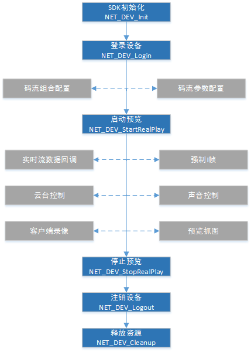

杰迈视讯SDK开发使用手册
实时预览
码流组合配置
NET_DEV_GetEncodeStreamCombine
NET_DEV_SetEncodeStreamCombine
码流参数
NET_DEV_GetEncodeCfg
NET_DEV_SetEncodeCfg
实时预览
NET_DEV_StartRealPlay
NET_DEV_StopRealPlay
播放库设置
NET_DEV_PlayPause
NET_DEV_PlayResume
NET_DEV_GetPlayRect
NET_DEV_SetPlayRect
NET_DEV_SetBufferTime
NET_DEV_SetPlayMode
NET_DEV_StartImageSharpen
NET_DEV_ChangeSharpenDegree
NET_DEV_StopImageSharpen
NET_DEV_GetPictureSize
播放声音控制
NET_DEV_SetVolume
强制I帧
NET_DEV_ForceIDR
画图回调
NET_DEV_RegisterDrawCallBack
抓取图片
NET_DEV_RealplayCapturePicture
录像
NET_DEV_SaveRealPlayData
NET_DEV_StopSaveRealPlayData
电子放大
NET_DEV_SetDisplayRegion
